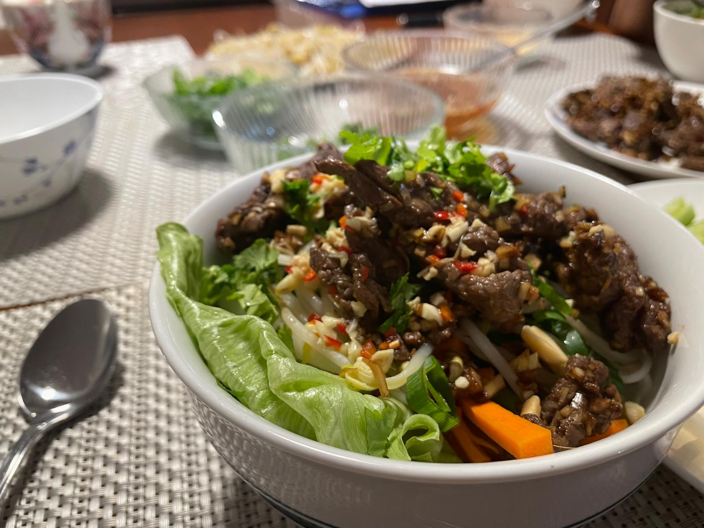

Serves 4. Adapted from David Tanis’ Vietnamese Lemongrass Beef and Noodle Salad on NYT Cooking.
All ingredients
Dipping sauce
- 5 tablespoons light brown sugar (separated: 4+1)
- 3 tablespoons rice vinegar
- 4 tablespoons lime juice (from two large limes, or use bottled)
- 6 tablespoons fish sauce1 (separated: 4+2)
- 5 garlic cloves - minced (separated: 2+3)
- 3 cm piece of ginger - peeled and minced
- 2 chillies - chopped
Salad
- 340 g rice vermicelli noodles
- 1 head lettuce
- 1 medium carrot
- 1 small cucumber
- 1 daikon radish
- A handful of bean sprouts
Beef stir-fry
- 500 g beef - sliced thinly (less than 1 cm thick)
- 80g lemongrass paste or 3 tablespoons lemongrass - tender centres finely chopped2
- Vegetable oil - for stir-frying
Garnish
- Bunch coriander
- Bunch mint leaves
- 4 tablespoons crushed roasted peanuts
(1) Make the dipping sauce
Grab the following ingredients:
- 4 tablespoons light brown sugar
- 3 tablespoons rice vinegar
- 4 tablespoons lime juice (from two large limes, or use bottled)
- 4 tablespoons fish sauce
- 2 garlic cloves - minced
- 3 cm piece of ginger - peeled and minced
- 2 chillies - chopped
Put them all in a bowl, stir to combine, then let sit for at least 15 minutes.
(2) Prep the noodles
Whilst the sauce is marinating, let’s prepare the noodles.
- 340 g rice vermicelli noodles
Boil some water in a large pot. When water has boiled, add the noodles to the pot. Cook according to package directions. Once cooked, drain the water and run the noodles under a tap of cold water. Let sit to cool.
(3) Prep the beef
While the noodles are cooling down, we’ll prepare the beef. Grab the following:
- 500 g beef - sliced thinly (less than 1 cm thick)
- 2 tablespoons fish sauce
- 1 tablespoon light brown sugar
- 3 garlic cloves - minced
- 80g lemongrass paste or 3 tablespoons lemongrass - tender centres finely chopped
Combine all the above in a bowl and let sit to marinate for at least 15 minutes.
(4) Prep salad
Whilst the beef is marinating, we’ll prepare the salad. Grab the salad ingredients:
- 1 head lettuce - yummy leaves washed and separated
- 1 medium carrot - cut and julienned3
- 1 small cucumber - cut and julienned
- 1 daikon radish - cut and julienned
- A handful of bean sprouts
- With the lettuce, separate the tender leaves and wash them. Leave to dry.
- Julienne the carrot, cucumber, and daikon. Set aside.
- Blanch the bean sprouts in boiling water, or leave them raw.
(5) Stir-fry beef
Let’s stir-fry the beef now. Grab the following:
- Marinated beef from Section 3 above
- Vegetable oil - for stir-frying
Pour in a tablespoon of vegetable oil in the frying pan and heat up on medium-high heat. Once pan is heated, cook the marinated beef in batches, making sure you don’t overcrowd the pan. Once you’ve cooked all the beef, set aside.
(6) All together, now
Now, to put them all together.
- Bunch coriander
- Bunch mint leaves
- 4 tablespoons crushed roasted peanuts
- In your serving bowls: add the cooled rice noodles and the salad (lettuce, carrots, cucumbers, and daikon strips).
- Pour the dipping sauce from Section 1 on top of the salad.
- Add the beef on top of the salad.
- Garnish with coriander, mint leaves, and crushed peanuts.
Notes
Don’t let the amount of ingredients intimidate you. It is more ingredients than your average dish, but most of them are pantry items (assuming you do a lot of Asian-style cooking). The preparation itself is simple. It takes me about 45 minutes to make at a leisurely pace, including all the chopping.
I also like to substitute the beef with chicken or pork, cooked with the same lemongrass marinade. I haven’t figured out how to substitute with tofu.
The name of this salad is Bun Bo Xao.

Footnotes
Use good quality fish sauce. In Australia, I prefer Squid or Red Boat. See this blog post for what makes a good fish sauce.↩︎
I would use canned or lemongrass hearts as the middles can be hard to chop when fresh or frozen.↩︎
In other words, matchsticks. For instructions, see this Serious Eats guide.↩︎